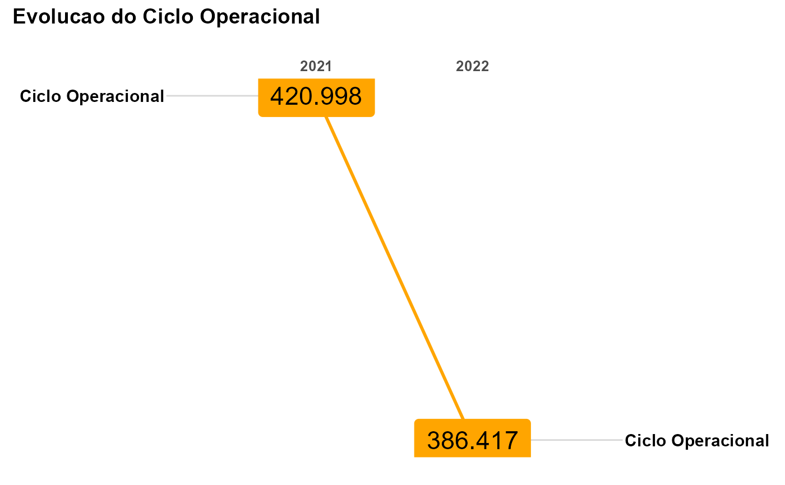

Essa função calcula o Ciclo Operacional da empresa
ind_cicloOperacional(
indicador = "Ciclo Operacional",
periodo = (year(Sys.Date()) - 2):(year(Sys.Date()) - 1),
estoqueInicial = c(2320, 2032),
estoqueFinal = c(4327, 3013),
clientesInicial = c(1712, 1430),
clientesFinal = c(3260, 2120),
receitaBruta = c(7500, 6000),
cmv = c(3500, 2781),
receitaLiquida = c(7200, 5630),
atvTotal = c(10900, 9800),
qdeDiasAno = 365,
relatorio = T,
titulo = "Evolucao do Ciclo Operacional",
subtitulo = "",
rodape = paste0("@", year(Sys.Date()), " contabiliDados"),
corFundo = "orange",
corLinhaTendencia = "orange",
tamanhoValores = 6,
tamanhoTempo = 10,
tamanhoVariavel = 4,
tamanhoTitulo = 14,
tamanhoSubTitulo = 10,
tamanhoRodape = 8,
corRodape = "gray"
)Um vetor tipo character com o nome do indicador
Vetor numérico indicando o período da análise
Vetor com os valores do Estoque do período anterior ao da análise
Vetor com os valores do Estoque do período da análise
Vetor com os valores do contas a receber (clientes) do período anterior ao da análise
Vetor com os valores do contas a receber (clientes) do período da análise
Vetor com os valores da receita bruta (disponível da DVA) da empresa
Vetor com os valores do custo das mercadorias vendidas da empresa
Vetor com os valores da receita líquida da empresa
Vetor com os valores do Ativo Total
Quantidade de dias do ano. (Padrão: 365)
Se TRUE, Mostra relatório do indicador. Se FALSE, mostra
apenas o vetor com resultados do indicador (TRUE/FALSE)
Título do gráfico
Subtítulo do gráfico
Rodapé do gráfico
Cor de fundo para os valores (Padrão: Laranja)
Cor da linha de tendência entre os valores (Padrão: Laranja)
Tamanho da fonte dos valores apresentados (Padrão: 6)
Tamanho da fonte dos rótulos relativo aos períodos de tempo (Padrão: 10)
Tamanho da fonte do texto relativo à variável analisada (Padrão: 4)
Tamanho da fonte do título (Padrão: 14)
Tamanho da fonte do subtítulo (Padrão: 10)
Tamanho da fonte do rodapé (Padrão: 8)
Cor da fonte do rodapé (Padrão: Cinza)2min
Representa a quantidade média de dias entre a estocagem e o recebimento das vendas da empresa.
Apresenta como resultado uma lista com 5 itens:
Gráfico se o parâmetro relatorio for TRUE ou T, mostra um gráfico com a
evolução do ativo cíclico da empresa durante os períodos. Se for FALSE ou F,
o gráfico não é apresentado;
Contas que corresponde ao banco de dados com as contas informadas para cálculo do indicador;
Índice o Ciclo Operacional dos períodos informados;
Análise Vertical Análise Vertical das contas informadas no item 2. Contas de resultado terão suas análises verticais em relação à receita total e contas patrimoniais terão suas análises verticais em relação ao ativo total;
Análise Horizontal Análise Horizontal das contas informadas no item 2.
Todos os itens da lista são bancos de dados no formato tibble que podem ser usados individualmente durante o processo de análise de dados.
Informações adicionais sobre como usar o pacote, orientamos acessar o menu
cntdd do Blog do Projeto contabiliDados: https://contabilidados.com.br/.
Ao acessar, fazer busca pelo nome da função ind_cicloOperacional
Contatos pelo email do Projeto contabiliDados: Email: contabilidados@ufersa.edu.br Siga-nos no Instagram: https://www.instagram.com/contabilidados @contabilidados
library(cntdd)
ind_cicloOperacional(
indicador = "Ciclo Operacional",
periodo = 2021:2022,
clientesInicial = c(2320, 2032),
clientesFinal = c(4327, 3013),
estoqueInicial = c(1712, 1430),
estoqueFinal = c(3260, 2120),
cmv = c(3500, 2781),
receitaLiquida = c(7200, 5630),
atvTotal = c(10900, 9800),
qdeDiasAno = 365,
relatorio = TRUE,
titulo = "Evolucao do Ciclo Operacional",
subtitulo = "",
rodape = "",
corFundo = "orange",
corLinhaTendencia = "orange",
tamanhoValores = 6,
tamanhoTempo = 10,
tamanhoVariavel = 4,
tamanhoTitulo = 14,
tamanhoSubTitulo = 10,
tamanhoRodape = 8,
corRodape = "gray"
)
#> $Contas
#> # A tibble: 8 × 3
#> conta `2021` `2022`
#> <chr> <dbl> <dbl>
#> 1 estoqueInicial 1712 1430
#> 2 estoqueFinal 3260 2120
#> 3 clientesInicial 2320 2032
#> 4 clientesFinal 4327 3013
#> 5 receitaBruta 7500 6000
#> 6 cmv 3500 2781
#> 7 receitaLiquida 7200 5630
#> 8 atvTotal 10900 9800
#>
#> $Indice
#> # A tibble: 1 × 3
#> conta `2021` `2022`
#> <chr> <dbl> <dbl>
#> 1 Ciclo Operacional 421. 386.
#>
#> $`Analise Vertical`
#> # A tibble: 5 × 3
#> conta `2021` `2022`
#> <chr> <chr> <chr>
#> 1 AV.clientesInicial 21,28% 20,73%
#> 2 AV.clientesFinal 39,70% 30,74%
#> 3 AV.estoqueInicial 15,71% 14,59%
#> 4 AV.estoqueFinal 29,91% 21,63%
#> 5 AV.cmv 48,61% 49,40%
#>
#> $`Analise Horizontal`
#> # A tibble: 8 × 2
#> conta `2022`
#> <chr> <chr>
#> 1 AH.clientesInicial -12,41%
#> 2 AH.clientesFinal -30,37%
#> 3 AH.estoqueInicial -16,47%
#> 4 AH.estoqueFinal -34,97%
#> 5 AH.receitaBruta -20,00%
#> 6 AH.cmv -20,54%
#> 7 AH.receitaLiquida -21,81%
#> 8 AH.atvTotal -10,09%
#>
#> $plot

#>